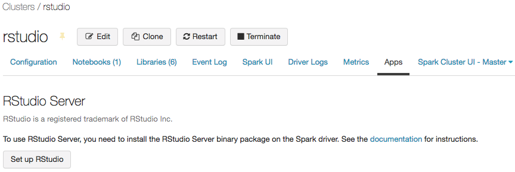
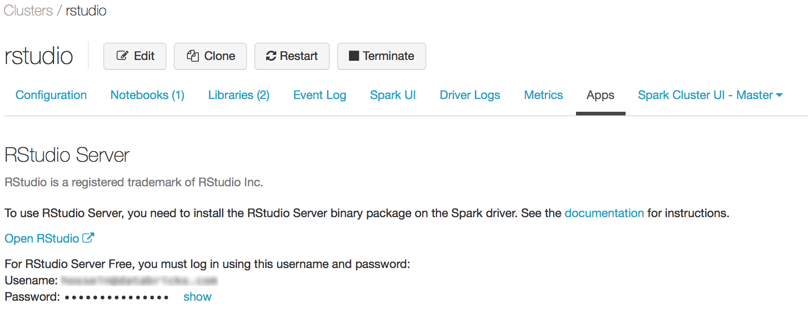
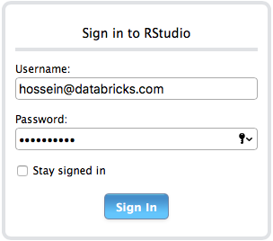
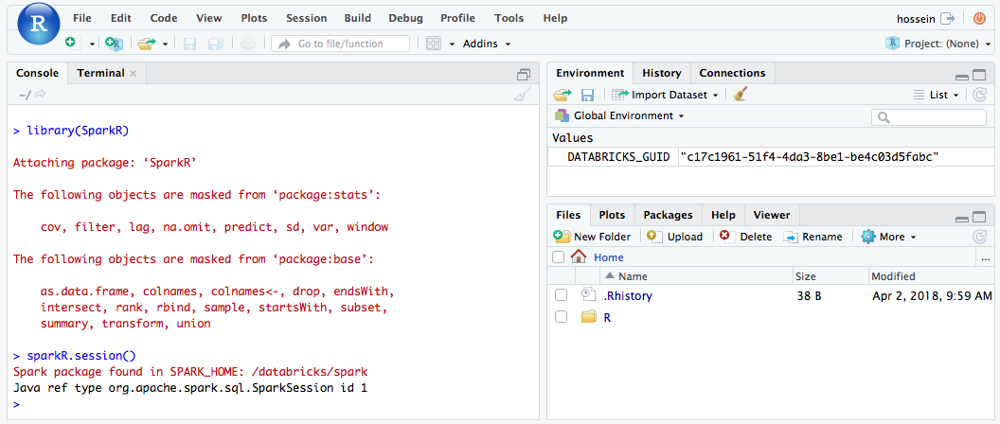
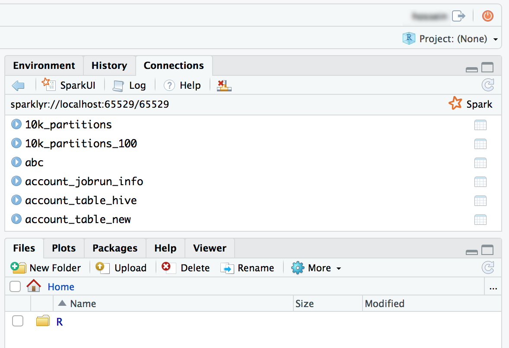
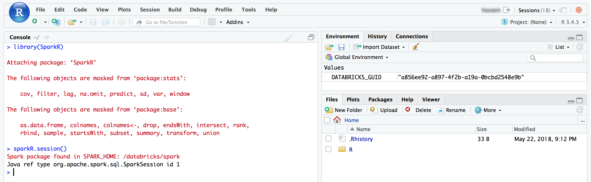
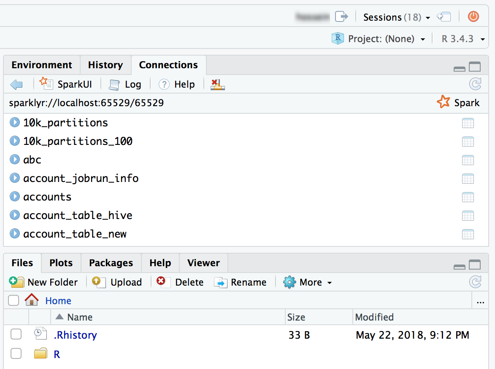

RStudio on Databricks
You can use RStudio, a popular integrated development environment (IDE) for R, to connect to Databricks compute resources within Databricks workspaces. Use RStudio Desktop to connect to a Databricks cluster or a SQL warehouse from your local development machine. You can also use your web browser to sign in to your Databricks workspace and then connect to a Databricks cluster that has RStudio Server installed, within that workspace.
Connect using RStudio Desktop
Use RStudio Desktop to connect to a remote Databricks cluster or SQL warehouse from your local development machine. To connect in this scenario, use an ODBC connection and call ODBC package functions for R, which are described in this section.
Note
You cannot use packages such as SparkR or sparklyr in this RStudio Desktop scenario, unless you also use Databricks Connect. As an alternative to using RStudio Desktop, you can use your web browser to sign in to your Databricks workspace and then connect to a Databricks cluster that has RStudio Server installed in that workspace.
To set up RStudio Desktop on your local development machine:
Start RStudio Desktop.
(Optional) To create an RStudio project:
Start RStudio Desktop.
Click File > New Project.
Select New Directory > New Project.
Choose a new directory for the project, and then click Create Project.
To create an R script:
With the project open, click File > New File > R Script.
Click File > Save As.
Name the file, and then click Save.
To connect to the remote Databricks cluster or SQL warehouse through ODBC for R:
Get the Server hostname, Port, and HTTP path values for your remote cluster or SQL warehouse. For a cluster, these values are on the JDBC/ODBC tab of Advanced options. For a SQL warehouse, these values are on the Connection details tab.
Get a Databricks personal access token.
Note
As a security best practice when you authenticate with automated tools, systems, scripts, and apps, Databricks recommends that you use OAuth tokens.
If you use personal access token authentication, Databricks recommends using personal access tokens belonging to service principals instead of workspace users. To create tokens for service principals, see Manage tokens for a service principal.
Install and configure the Databricks ODBC driver for Windows, macOS, or Linux, based on your local machine’s operating system.
Set up an ODBC Data Source Name (DSN) to your remote cluster or SQL warehouse for Windows, macOS, or Linux, based on your local machine’s operating system.
From the RStudio console (View > Move Focus to Console), install the odbc and DBI packages from CRAN:
require(devtools) install_version( package = "odbc", repos = "http://cran.us.r-project.org" ) install_version( package = "DBI", repos = "http://cran.us.r-project.org" )
Back in your R script (View > Move Focus to Source), load the installed
odbcandDBIpackages:library(odbc) library(DBI)
Call the ODBC version of the dbConnect function in the
DBIpackage, specifying theodbcdriver in theodbcpackage as well as the ODBC DSN that you created, for example, an ODBC DSN ofDatabricks.conn = dbConnect( drv = odbc(), dsn = "Databricks" )
Call an operation through the ODBC DSN, for instance a
SELECTstatement through the dbGetQuery function in theDBIpackage, specifying the name of the connection variable and theSELECTstatement itself, for example from a table nameddiamondsin a schema (database) nameddefault:print(dbGetQuery(conn, "SELECT * FROM default.diamonds LIMIT 2"))
The complete R script is as follows:
library(odbc)
library(DBI)
conn = dbConnect(
drv = odbc(),
dsn = "Databricks"
)
print(dbGetQuery(conn, "SELECT * FROM default.diamonds LIMIT 2"))
To run the script, in source view, click Source. The results for the preceding R script are as follows:
_c0 carat cut color clarity depth table price x y z
1 1 0.23 Ideal E SI2 61.5 55 326 3.95 3.98 2.43
2 2 0.21 Premium E SI1 59.8 61 326 3.89 3.84 2.31
Connect using RStudio Server
Use your web browser to sign in to your Databricks workspace and then connect to a Databricks cluster that has RStudio Server installed, within that workspace.
Note
As an alternative to RStudio Server, you can use RStudio Desktop to connect to a Databricks cluster or SQL warehouse from your local development machine through an ODBC connection, and call ODBC package functions for R. You cannot use packages such as SparkR or sparklyr in the RStudio Desktop scenario, unless you also use Databricks Connect.
For RStudio Server, you can use either the Open Source Edition or RStudio Workbench (previously RStudio Server Pro) edition on Databricks. If you want to use RStudio Workbench / RStudio Server Pro, you must transfer your existing RStudio Workbench / RStudio Server Pro license to Databricks (see Get started: RStudio Workbench).
Databricks recommends that you use Databricks Runtime for Machine Learning (Databricks Runtime ML) on Databricks clusters with RStudio Server, to reduce cluster start times. Databricks Runtime ML includes an unmodified version of the RStudio Server Open Source Edition package for which the source code can be found in GitHub. The following table lists the version of RStudio Server Open Source Edition that is currently preinstalled on Databricks Runtime ML versions.
Databricks Runtime for ML Version |
RStudio Server Version |
|---|---|
Databricks Runtime 7.3 LTS ML |
1.2 |
Databricks Runtime 9.1 LTS ML and 10.4 LTS ML |
1.4 |
RStudio integration architecture
When you use RStudio Server on Databricks, the RStudio Server Daemon runs on the driver node of a Databricks cluster. The RStudio web UI is proxied through Databricks webapp, which means that you do not need to make any changes to your cluster network configuration. This diagram demonstrates the RStudio integration component architecture.
Warning
Databricks proxies the RStudio web service from port 8787 on the cluster’s Spark driver. This web proxy is intended for use only with RStudio. If you launch other web services on port 8787, you might expose your users to potential security exploits. Databricks is not responsible for any issues that result from the installation of unsupported software on a cluster.
Requirements
The cluster must be an all-purpose cluster.
You must have Can Attach To permission for that cluster. The cluster admin can grant you this permission. See Cluster access control.
The cluster must not have table access control, automatic termination, or credential passthrough enabled.
The cluster must not use the Shared access mode.
The cluster must not have the Spark configuration
spark.databricks.pyspark.enableProcessIsolationset totrue.You must have an RStudio Server floating Pro license to use the Pro edition.
Get started: RStudio Server OS Edition
RStudio Server Open Source Edition is preinstalled on Databricks clusters that use Databricks Runtime for Machine Learning (Databricks Runtime ML).
To open RStudio Server OS Edition on a cluster, do the following:
Open the cluster’s details page.
Start the cluster, and then click the Apps tab:
On the Apps tab, click the Set up RStudio button. This generates a one-time password for you. Click the show link to display it and copy the password.
Click the Open RStudio link to open the UI in a new tab. Enter your username and password in the login form and sign in.
From the RStudio UI, you can import the
SparkRpackage and set up aSparkRsession to launch Spark jobs on your cluster.library(SparkR) sparkR.session() # Query the first two rows of a table named "diamonds" in a # schema (database) named "default" and display the query result. df <- SparkR::sql("SELECT * FROM default.diamonds LIMIT 2") showDF(df)
You can also attach the sparklyr package and set up a Spark connection.
library(sparklyr) sc <- spark_connect(method = "databricks") # Query a table named "diamonds" and display the first two rows. df <- spark_read_table(sc = sc, name = "diamonds") print(x = df, n = 2)

Get started: RStudio Workbench
This section shows you how to set up and start using RStudio Workbench (formerly RStudio Server Pro) on a Databricks cluster. See an FAQ about the name change. Depending on your license, RStudio Workbench may include RStudio Server Pro.
Set up RStudio license server
To use RStudio Workbench on Databricks, you need to convert your Pro License to a floating license. For assistance, contact help@rstudio.com. When your license is converted, you must set up a license server for RStudio Workbench.
To set up a license server:
Launch a small instance on your cloud provider network; the license server daemon is very lightweight.
Download and install the corresponding version of RStudio License Server on your instance, and start the service. For detailed instructions, see RStudio Workbench Admin Guide.
Make sure that the license server port is open to Databricks instances.
Install RStudio Workbench
To set up RStudio Workbench on a Databricks cluster, you must create an init script to install the RStudio Workbench binary package and configure it to use your license server for license lease. See Use cluster-scoped init scripts for more details.
Note
If you plan to install RStudio Workbench on a Databricks Runtime version that already includes RStudio Server Open Source Edition package, you need to first uninstall that package for installation to succeed.
The following is an example notebook cell that generates an init script on DBFS. The script also performs additional authentication configurations that streamline integration with Databricks.
Important
All users have read and write access to DBFS, so the init script can be modified by any user. If this is a potential issue for you, Databricks recommends that you put the init script on S3 and restrict permissions to it.
You may need to modify the package URL depending on the Ubuntu version of your runtime, which you can find in the release notes.
script = """#!/bin/bash
set -euxo pipefail
if [[ $DB_IS_DRIVER = "TRUE" ]]; then
sudo apt-get update
sudo dpkg --purge rstudio-server # in case open source version is installed.
sudo apt-get install -y gdebi-core alien
## Installing RStudio Workbench
cd /tmp
# You can find new releases at https://rstudio.com/products/rstudio/download-commercial/debian-ubuntu/.
wget https://download2.rstudio.org/server/bionic/amd64/rstudio-workbench-2022.02.1-461.pro1-amd64.deb -O rstudio-workbench.deb
sudo gdebi -n rstudio-workbench.deb
## Configuring authentication
sudo echo 'auth-proxy=1' >> /etc/rstudio/rserver.conf
sudo echo 'auth-proxy-user-header-rewrite=^(.*)$ $1' >> /etc/rstudio/rserver.conf
sudo echo 'auth-proxy-sign-in-url=<domain>/login.html' >> /etc/rstudio/rserver.conf
sudo echo 'admin-enabled=1' >> /etc/rstudio/rserver.conf
sudo echo 'export PATH=/usr/local/sbin:/usr/local/bin:/usr/sbin:/usr/bin:/sbin:/bin' >> /etc/rstudio/rsession-profile
# Enabling floating license
sudo echo 'server-license-type=remote' >> /etc/rstudio/rserver.conf
# Session configurations
sudo echo 'session-rprofile-on-resume-default=1' >> /etc/rstudio/rsession.conf
sudo echo 'allow-terminal-websockets=0' >> /etc/rstudio/rsession.conf
sudo rstudio-server license-manager license-server <license-server-url>
sudo rstudio-server restart || true
fi
"""
dbutils.fs.mkdirs("/databricks/rstudio")
dbutils.fs.put("/databricks/rstudio/rstudio-install.sh", script, True)
Replace
<domain>with your Databricks URL and<license-server-url>with the URL of your floating license server.Run the code in a notebook to install the script at
dbfs:/databricks/rstudio/rstudio-install.shBefore launching a cluster add
dbfs:/databricks/rstudio/rstudio-install.shas an init script. See Use cluster-scoped init scripts for details.Launch the cluster.
Use RStudio Server Pro
Open the cluster’s details page.
Start the cluster, and click the Apps tab:
On the Apps tab, click the Set up RStudio button.
You do not need the one-time password. Click the Open RStudio UI link and it will open an authenticated RStudio Pro session for you.
From the RStudio UI, you can attach the
SparkRpackage and set up aSparkRsession to launch Spark jobs on your cluster.library(SparkR) sparkR.session() # Query the first two rows of a table named "diamonds" in a # schema (database) named "default" and display the query result. df <- SparkR::sql("SELECT * FROM default.diamonds LIMIT 2") showDF(df)
You can also attach the sparklyr package and set up a Spark connection.
library(sparklyr) sc <- spark_connect(method = "databricks") # Query a table named "diamonds" and display the first two rows. df <- spark_read_table(sc = sc, name = "diamonds") print(x = df, n = 2)

RStudio Server FAQ
What is the difference between RStudio Server Open Source Edition and RStudio Workbench?
RStudio Workbench supports a wide range of enterprise features that are not available on the Open Source Edition. You can see the feature comparison on RStudio’s website.
In addition, RStudio Server Open Source Edition is distributed under the GNU Affero General Public License (AGPL), while the Pro version comes with a commercial license for organizations that are not able to use AGPL software.
Finally, RStudio Workbench comes with professional and enterprise support from RStudio, PBC, while RStudio Server Open Source Edition comes with no support.
Can I use my RStudio Workbench / RStudio Server Pro license on Databricks?
Yes, if you already have a Pro or Enterprise license for RStudio Server, you can use that license on Databricks. See Get started: RStudio Workbench to learn how to set up RStudio Workbench on Databricks.
Where does RStudio Server run? Do I need to manage any additional services/servers?
As you can see on the diagram in RStudio integration architecture, the RStudio Server daemon runs on the driver (master) node of your Databricks cluster. With RStudio Server Open Source Edition, you do not need to run any additional servers/services. However, for RStudio Workbench, you must manage a separate instance that runs RStudio License Server.
Can I use RStudio Server on a standard cluster?
Note
This article describes the legacy clusters UI. For information about the new clusters UI (in preview), including terminology changes for cluster access modes, see Create a cluster. For a comparison of the new and legacy cluster types, see Clusters UI changes and cluster access modes.
Yes, you can.
Can I use RStudio Server on a cluster with auto termination?
No, you can’t use RStudio when auto termination is enabled. Auto termination can purge unsaved user scripts and data inside an RStudio session. To protect users against this unintended data loss scenario, RStudio is disabled on such clusters by default.
For customers who require cleaning up cluster resources when they are not used, Databricks recommends using cluster APIs to clean up RStudio clusters based on a schedule.
How should I persist my work on RStudio?
We strongly recommend that you persist your work using a version control system from RStudio. RStudio has great support for various version control systems and allows you to check in and manage your projects. If you do not persist your code through one of the following methods, you risk losing your work if a workspace admin restarts or terminates the cluster.
One method is to save your files (code or data) on the What is the Databricks File System (DBFS)?. For example, if you save a file under /dbfs/ the files will not be deleted when your cluster is terminated or restarted.
Another method is to save the R notebook to your local file system by exporting it as Rmarkdown, then later importing the file into the RStudio instance. The blog Sharing R Notebooks using RMarkdown describes the steps in more detail.
Another method is to mount an Amazon Elastic File System (Amazon EFS) volume to your cluster, so that when the cluster is shut down you won’t lose your work. When the cluster restarts, Databricks remounts the Amazon EFS volume, and you can continue where you left off. To mount an existing Amazon EFS volume to a cluster, call the create cluster (POST /api/2.0/clusters/create) or edit cluster (POST /api/2.0/clusters/edit) operation in the Clusters API 2.0, specifying the Amazon EFS volume’s mount information in the operation’s cluster_mount_infos array.
Make sure the cluster that you create or use does not have Unity Catalog, auto termination, or auto scaling enabled. Also make sure that the cluster has write access to the mounted volume, for example by running the command chmod a+w </path/to/volume> on the cluster. You can run this command on an existing cluster through the cluster’s web terminal, or on a new cluster by using an init script that you specify in the preceding operation’s init_scripts array.
If you do not have an existing Amazon EFS volume, you can create one. First, contact your Databricks administrator and get the VPC ID, public subnet ID, and security group ID for your Databricks workspace. Then use this information, along with the AWS Management Console, to create a file system with custom settings using the Amazon EFS console. In the last step of this procedure, click Attach and copy the DNS name and mount options, which you specify in the preceding cluster_mount_infos array.
How do I start a SparkR session?
SparkR is contained in Databricks Runtime, but you must load it into RStudio. Run the following code inside RStudio to initialize a SparkR session.
library(SparkR)
sparkR.session()
If there is an error importing the SparkR package, run .libPaths() and verify that /home/ubuntu/databricks/spark/R/lib is included in the result.
If it is not included, check the content of /usr/lib/R/etc/Rprofile.site. List /home/ubuntu/databricks/spark/R/lib/SparkR on the driver to verify that the SparkR package is installed.
How do I start a sparklyr session?
The sparklyr package must be installed on the cluster. Use one of the following methods to install the sparklyr package:
As a Databricks library
install.packages()commandRStudio package management UI
library(sparklyr)
sc <- spark_connect(method = “databricks”)
How does RStudio integrate with Databricks R notebooks?
You can move your work between notebooks and RStudio through version control.
What is the working directory?
When you start a project in RStudio, you choose a working directory. By default this is the home directory on the driver (master) container where RStudio Server is running. You can change this directory if you want.
Can I launch Shiny Apps from RStudio running on Databricks?
Yes, you can develop and view Shiny applications inside RStudio Server on Databricks.
I can’t use terminal or git inside RStudio on Databricks. How can I fix that?
Make sure that you have disabled websockets. In RStudio Server Open Source Edition, you can do this from the UI.
In RStudio Server Pro, you can add allow-terminal-websockets=0 to /etc/rstudio/rsession.conf to disable websockets for all users.
I don’t see the Apps tab under cluster details.
This feature is not available to all customers. You must be on the Premium plan or above.